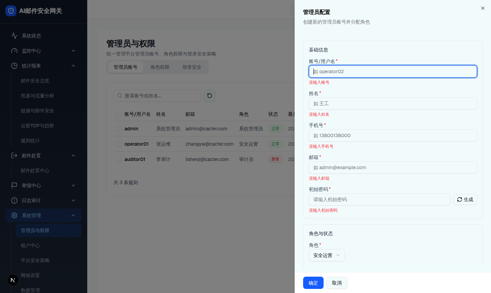

1 交互层级 1：抽屉打开态（新建，含即时校验）
触发路径：层0 工具栏「＋新建」→ 打开右侧抽屉。空 draft 下所有必填即时报错。可交互：「生成」按钮填入随机密码占位；角色/账号状态为下拉。
点「生成」填入 16 位随机密码；点角色/账号状态下拉选择
角色与状态
安全运营
启用（正常）

层级 1：新建管理员抽屉（浏览器实际渲染 · 空 draft 即时校验）
UI 元素清单
| # | 元素 | 标签 | 占位/默认 | 校验规则 | 禁用条件 | 形态/角色差异 |
|---|
| 1 | Input | 账号/用户名* | 如 operator02 | 非空 + 不重复（大小写不敏感）；"该账号已存在" | 编辑时 disabled | [Base] 一致 |
| 2 | Input | 姓名* | 如 王工 | 非空 | - | [Base] 一致 |
| 3 | Input | 手机号* | 如 13800138000 | /^1[3-9]\d{9}$/；"请输入正确的手机号" | - | [Base] 一致 |
| 4 | Input(email) | 邮箱* | 如 admin@example.com | 邮箱正则；"请输入正确的邮箱" | - | [Base] 一致 |
| 5 | Input(text) + 生成 | 初始密码* / 新密码 | 请输入初始密码 / 留空表示不修改 | 满足密码策略（8 位以上，含大小写/数字/特殊）；新建必填，编辑留空=不改；hint「需满足密码策略」 | - | [Overlay] 校验应读取所在 scope 的密码策略 |
| 6 | Select | 角色* | 安全运营（emptyDraft 默认 role_ops） | 必选；租户视角剔除「系统管理员」 | - | [租户管理员] 不含 role_sys |
| 7 | Select | 账号状态 | 启用（正常） | 启用/禁用 | - | [Base] 一致 |
| 8 | Button | 确定 / 取消 | - | hasError 时确定 → Toast「请修正表单中的校验错误」；成功 → 「管理员已创建/已更新」 | - | [Base] 一致 |
保存逻辑：租户视角创建的均为租户管理员（不可成为平台系统管理员）；isSystemAdmin = !isTenant && roleId==="role_sys"。
DOM 树比对结果
| 比对项 | demo 实际 DOM | 提取的 HTML | 是否一致 |
|---|
| 抽屉根 | [role=dialog][data-slot=sheet-content] 右侧全高（64 节点） | 同结构（cp 抽屉映射） | 一致 |
| 标题/描述 | 「管理员配置」/「创建新的管理员账号并分配角色」 | 同 | 一致 |
| 分组卡数 | 2（基础信息 / 角色与状态） | 2 | 一致 |
| 字段数 | 7（账号/姓名/手机号/邮箱/密码/角色/状态） | 7 | 一致 |
| 即时校验错误 | 空 draft 下 5 处必填红字（请输入账号/姓名/手机号/邮箱/初始密码） | 同 | 一致 |
| 密码字段 | type=text + 「生成」按钮（明文显示，见主文件 D-006） | 同 | 一致 |
| 底部按钮 | 确定(bg-blue-600) / 取消 | 同 | 一致 |